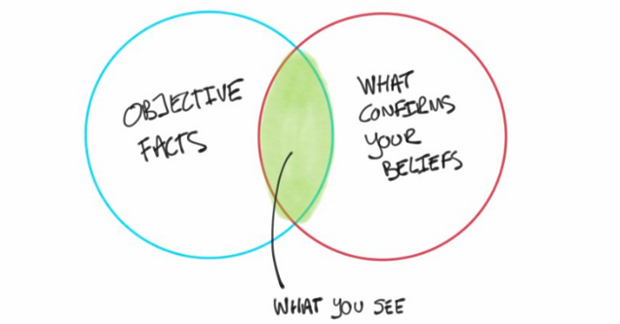

Gallery
Project
Project
Visuals



Machine learning model to classify news articles as real or fake using NLP techniques and ensemble classification algorithms — published as a peer-reviewed research paper.
This project tackles the growing problem of misinformation by building a machine learning system that automatically classifies news articles as real or fake. Using a dataset of thousands of labeled news articles, the model applies Natural Language Processing techniques to extract meaningful features from text.
The approach involves text preprocessing (tokenization, stop word removal, stemming), TF-IDF vectorization to convert text into numerical features, and multiple classification algorithms including Logistic Regression, Random Forest, and Passive Aggressive Classifier.
This research was published as a peer-reviewed paper in the International Journal for Research in Applied Science and Engineering Technology (IJRASET) in 2020, and presented at a national conference.
Full NLP pipeline including tokenization, stop word removal, stemming, and TF-IDF vectorization to transform raw news text into ML-ready features.
Achieved strong classification performance with a confusion matrix showing 1113 true negatives and 2159 true positives on the test dataset.
Results were peer-reviewed and published in IJRASET (2020) and presented at a national conference, validating the approach.